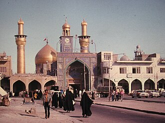

PrésentationتقديمOverview
Le mausolée de l'imam Hussein, également appelé mosquée de l'imam Hussein, est un lieu sacré islamique chiite situé à Kerbala, en Irak. Abritant le tombeau de Al-Hussein ibn Ali, petit-fils du prophète Mahomet, mort au cours de la bataille de Kerbala (680), il est un des lieux les plus sacrés de l'islam chiite. Il est visité par des millions de pèlerins chaque année, notamment au cours des commémorations de l'achoura.
العتبة الحسينية هو المكان الذي دفن فيه الحسين بن علي في كربلاء في العراق بعد معركة كربلاء عام 61 هـ، ويقصده المسلمين من طائفة الشيعة لأجل زيارته والتبرك بمرقدهِ.
The Imam Husayn Shrine is the mausoleum of Husayn ibn Ali, located in Karbala, in the Karbala Governorate of Iraq. Husayn was the second son of Ali and Fatima, grandson of the Islamic prophet Muhammad, the third Shia Imam, and is regarded as a martyr by all Muslims. The site is the place where he was brutally killed and beheaded during the Battle of Karbala. The shrine is a profoundly holy site in Shia Islam. Each year, millions of people around the world observe Ashura during Muharram and later undertake the Arba'in pilgrimage to his shrine, the largest annual public gathering on earth.
İmam Hüseyin Türbesi veya diğer kullanımıyla İmam Hüseyin Camii, Irak'ın Kerbela şehrinde yer alan ve Şiilik inancına göre On İki İmam'ın üçüncüsü olan Hüseyin bin Ali'nin mezarının bulunduğu türbe ve camidir. Şiiler tarafından kutsal bir yer olarak kabul edilmekte, Hüseyin bin Ali'nin ölüm yıldönümü olan Aşure Günü'nde şehri ve türbeyi milyonlarca Şii ziyaret etmektedir.
Mausoleum Husain bin Ali adalah sebuah mausoleum dari Husain bin Ali, imam ketiga dari golongan Islam Syi'ah, di kota Karbala, Irak. Makam ini berdiri di samping Mausoleum Husain, cucu dari Nabi Muhammad, dekat dengan tempat Husain terbunuh pada Pertempuran Karbala tahun 680 CE Makam Husain adalah salah satu tempat tersuci bagi golongan islam Syiah, selain Mekah dan Medinah, dan banyak jemaah yang mengunjungi makam ini. Setiap tahun jutaan jemaah mengunjungi makam untuk memperingati Hari Asyura, yang merupakan peringatan hari kematian Husain.
Der Imam-Husain-Schrein ist eine heilige Stätte des schiitischen Islams in der Stadt Kerbela, Irak. Sie steht neben dem Grab von Husain ibn ʿAlī, dem zweiten Enkel Mohammeds, in der Nähe des Ortes, wo er in der Schlacht von Kerbela im Jahr 680 starb.
La mezquita (del) Imam Husayn también llamada santuario de Husayn ibn ‘Alī es una importante mezquita de Irak, una de las mezquitas más antiguas del mundo y lugar de peregrinación para los musulmanes chiíes.
De Imam Hoesseinmoskee is een moskee in de Iraakse stad Karbala.
伊玛目侯赛因圣陵 又称侯赛尼耶陵园 是全世界最古老的清真寺之一，也是伊斯兰教什叶派第四大圣寺，仅次于麦加的禁寺、麦地那的先知寺和纳杰夫的伊玛目阿里清真寺。圣陵座落于今伊拉克的卡尔巴拉，伊斯兰教创始人穆罕默德的外孙、什叶派第三任伊玛目侯赛因·伊本·阿里即安葬于此，他于公历680年的卡尔巴拉惨案中遇难，遇难地点就离如今圣陵所在的位置不远。每年的阿舒拉节期间都有数以百万计的朝圣者前来拜谒圣陵，缅怀殉道的侯赛因。
イマーム・フサイン廟 は、シーア派三代目イマームのフサイン・イブン・アリーのモスクである。現在のイラクのカルバラーにある。
이맘 후사인 성전(아랍어: مَقَام الإِمَامُ الْحُسَيْن اِبِنْ عَلي)은 이라크 카르발라주의 성스러운 도시 카르발라에 위치한 후사인 이븐 알리의 마우솔레움이자 시아파 모스크이다. 후사인은 무함마드의 손자로, 이 유적지는 그가 공통 기원 680년 카르발라 전투 중에 순교한 장소 근처에 있다. 후사인의 묘는 메카와 메디나를 제외하고 시아파의 성지 중 하나이며, 많은 이들이 이곳으로 순례를 떠난다. 매년 수백만 명의 순례자들이 모든 무슬림에게 후사인의 죽음을 기리는 기념일인 아슈라를 지키기 위해 이 도시를 방문한다.
इमाम हुसैन का मकबरा अन्य नाम, हुसैन तीर्थ या इमाम हुसैन इब्न अली का रौज़ा, यहां मकबरा इस्लाम में बहुत महत्वपूर्ण है जो इराक के कर्बला शहर में स्थित हज़रत इमाम हुसैन जो हज़रत मुहम्मद सहाब के एक नबासे थे, वह 680 ईस्वी में कर्बला की लड़ाई के दौरान शहीद हो गए थे। इमाम हुसैन का मकबरा शिया मुसलमानों के लिए सबसे पवित्र स्थानों में से एक है, मक्का और मदीना के बाद मुसलमान इस स्थल पर सबसे ज्यादा तीर्थयात्रा करते हैं। हर साल, लाखों तीर्थयात्री शहर में आशुरा देखने जाते हैं, जो इमाम हुसैन की मृत्यु की वर्षगांठ का प्रतीक है। हर साल अरबों रस्मों के लिए जो कि अशुरा के चालीस दिन बाद तक होते हैं, जिसमें शामिल होने के लिए 45 मिलियन लोग कर्बला शहर में जाते हैं।
Мавзолей имама Хусейна — мавзолей и мечеть в иракском городе Кербела. В мавзолее захоронен третий шиитский имам, второй сын Али ибн Абу Талиба и Фатимы — Хусейн ибн Али, также известный как имам Хусейн.
Husayn ibn Alis helgedom är en för shī'amuslimer helig plats i staden Karbala, Irak. Den är uppförd på platsen för Husayn ibn Alis grav. Husayn ibn Ali var profeten Muhammeds andra barnbarn. Hans grav är en av de heligaste platserna för shī'iter, förutom Mekka och Medina, och många vallfärdar till platsen. Flera miljoner pilgrimer besöker varje år staden för att fira ashura på årsdagen för Husayn ibn Alis död.
Moscheea Imamului Hussein este o moschee din Karbala, Irak. Este una dintre cele mai celebre moschei din lume și unul dintre cele mai sfinte locuri pentru musulmanii șiiți. Importanța ei se datorează faptului că aici se află mormântul lui Hussein ibn Ali, considerat de șiiți ca fiind al treilea imam, dar tot aici se află și mormintele celorlalți martiri ce au murit în Bătălia de la Karbala din anul 680 d.Hr.
Sur la carteعلى الخريطةOn the map
Documents et liensوثائق وروابطDocuments and links
- Wikipédia — Français
- Wikipédia — العربية
- Wikipédia — English
- Wikipédia — Türkçe
- Wikipédia — Bahasa Indonesia
- Wikipédia — اردو
- Wikipédia — Deutsch
- Wikipédia — Español
- Wikipédia — Nederlands
- Wikipédia — 中文
- Wikipédia — 日本語
- Wikipédia — 한국어
- Wikipédia — हिन्दी
- Wikipédia — Русский
- Wikipédia — Svenska
- Wikipédia — Română
- Wikidata — Q773704
Données : Wikidata (CC0), mises à jour tous les 3 mois. L'année est la plus ancienne date de construction connue du bâtiment : pour un édifice devenu mosquée plus tard (comme Sainte-Sophie), c'est celle du bâtiment d'origine. Photos : Wikimedia Commons, auteur et licence sur la page de chaque photo.البيانات: ويكي بيانات (CC0)، تُحدَّث كل 3 أشهر. السنة هي أقدم تاريخ معروف لبناء المبنى: فإن صار مسجدًا لاحقًا (مثل آيا صوفيا) فهي سنة المبنى الأصلي. الصور: ويكيميديا كومنز، المؤلف والرخصة في صفحة كل صورة.Data: Wikidata (CC0), updated every 3 months. The year is the earliest known construction date of the building: for a building that became a mosque later (such as Hagia Sophia), it is that of the original building. Photos: Wikimedia Commons, author and licence on each photo's page.
Grandes mosquées du mondeالجوامع الكبرى في العالمGreat mosques of the world →